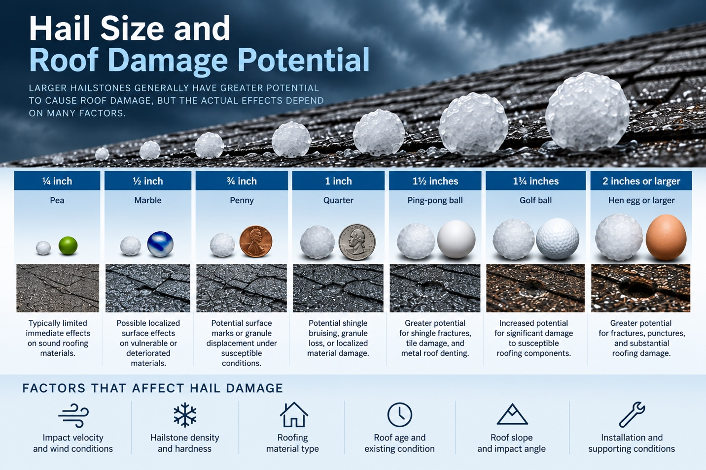

What size hail damages a roof? Hailstones approximately 1 inch in diameter can damage certain roofing materials, but there is no universal hailstone size that guarantees roof damage. Smaller hailstones may affect vulnerable roofing surfaces, while larger hailstones generally have greater potential to cause fractures, punctures, and other significant damage.
The extent of damage depends on more than hailstone diameter. Impact velocity, wind conditions, hailstone characteristics, roofing material, roof age, and existing conditions all influence how a roofing system responds.
Understanding these factors is important for property owners, insurance professionals, and others evaluating potential storm-related damage. Hail size indicates damage potential, but it does not independently establish whether damage occurred.
What Size Hail Can Cause Roof Damage?
Hailstones range from small pellets to stones several inches in diameter. As hailstone size increases, the potential impact energy generally increases as well.
However, roofing materials respond differently depending on their construction and condition.
The following hail size chart provides general comparisons and potential effects on roofing systems.
| Hail Size | Common Comparison | Potential Roof Effects |
|---|---|---|
| ¼ inch | Pea | Typically limited immediate effects on sound roofing materials. |
| ½ inch | Marble | Possible localized surface effects on vulnerable or deteriorated materials. |
| ¾ inch | Penny | Potential surface marks or granule displacement under susceptible conditions. |
| 1 inch | Quarter | Potential shingle bruising, granule loss, or localized material damage. |
| 1½ inches | Ping-pong ball | Greater potential for shingle fractures, tile damage, and metal roof denting. |
| 1¾ inches | Golf ball | Increased potential for significant damage to susceptible roofing components. |
| 2 inches or larger | Hen egg or larger | Greater potential for fractures, punctures, and substantial roofing damage. |
These are general illustrations of damage potential, not established thresholds. Actual damage depends on impact characteristics, roofing materials, installation, and existing conditions.

A roof exposed to one-inch hail may sustain damage, while another exposed to larger hailstones may experience little functional impairment.
The difference often lies in the characteristics of the roofing system and the physical conditions of the storm.
Can 1-Inch Hail Damage a Roof?
Yes. One-inch hail can damage a roof, particularly when the roofing materials are aged, deteriorated, or otherwise susceptible to impact.
For asphalt shingles, possible effects include localized granule loss, surface indentations, bruising, or fractures.
However, the occurrence of one-inch hail does not automatically establish that a roof sustained functional damage.
Consider two roofs exposed to the same storm. One has relatively new asphalt shingles with good impact resistance. The other has older shingles that have experienced years of ultraviolet exposure, thermal cycling, and weathering.
Although both roofs may experience similar hailstone impacts, their responses can differ significantly.
This is why the presence of one-inch hail should be evaluated alongside the physical evidence rather than treated as proof of damage.
Can Smaller Hail Damage Roof Shingles?
Smaller hailstones generally carry less impact energy than larger stones, but their potential effects should not be dismissed entirely.
On asphalt shingles, small hail may contribute to localized surface wear or granule displacement, particularly when materials are already deteriorated.
Granules help protect the asphalt coating from ultraviolet radiation and environmental exposure. When granules are lost, the underlying material becomes more vulnerable to weathering.
However, granule loss can also result from normal aging, manufacturing conditions, foot traffic, or other mechanical influences.
The presence of missing granules does not, by itself, establish hail damage.
Similarly, damage that develops gradually through repeated exposure should be distinguished from damage attributable to a particular storm event.
Understanding the signs of hail roof damage and how they are evaluated can help property owners recognize why a closer inspection may be necessary.
Why Hail Size Alone Cannot Determine Roof Damage
Hailstone diameter is an important factor, but several additional variables influence the severity of an impact.
Impact Velocity and Wind Conditions
The energy transferred during a hail impact depends on the hailstone’s mass and velocity.
Larger hailstones generally have greater mass and can deliver greater impact energy. Wind may also influence their speed and direction.
Consequently, hailstones of similar size can produce different effects depending on the conditions under which they strike a roof.
Hailstone Density and Hardness
Hailstones vary in density, internal structure, and hardness.
Some may fracture or shatter upon impact, while others remain relatively intact. These differences affect how energy is transferred to roofing materials.
Two hailstones of similar diameter may therefore produce different impact responses.
Roof Age and Existing Condition
Roofing materials change over time through exposure to sunlight, moisture, temperature fluctuations, and other environmental conditions.
Aged or deteriorated roofing materials may be more susceptible to certain types of impact damage.
However, roof age alone does not establish causation. An evaluation must distinguish storm-related effects from conditions that existed before the event.
Roof Slope and Impact Angle
Roof slope and orientation influence the angle at which hailstones strike roofing surfaces.
Wind-driven hail may produce different impact patterns across roof slopes and elevations.
These variations can help explain why damage is not necessarily distributed uniformly across a building.
Material Properties and Installation
Material composition, thickness, flexibility, impact resistance, and supporting conditions influence how a roof responds to hail.
Installation characteristics can also affect localized impact behavior.
For this reason, hailstone size should be considered together with the properties of the roofing system rather than evaluated in isolation.
How Does Roofing Material Affect Hail Damage?
Different roofing materials respond to hail impacts in different ways.
Asphalt shingles may experience granule loss, bruising, or fractures, depending on shingle construction, age, and impact severity.
Metal roofing may develop visible dents without necessarily experiencing functional impairment. More severe impacts can affect coatings, seams, or other vulnerable components.
Clay and concrete tiles may experience chips, cracks, or fractures because of their relatively rigid construction.
Low-slope roofing systems, including single-ply membranes and modified bitumen assemblies, may experience punctures, tears, or damage involving underlying components.
Importantly, visible damage does not always mean that a roofing system’s performance has been compromised.
The distinction between cosmetic and functional hail damage is particularly relevant when evaluating whether observed conditions affect the roof’s intended performance.
Does Larger Hail Always Mean More Severe Roof Damage?
Not necessarily.
Larger hailstones generally have greater potential to cause damage, but actual roof performance depends on the interaction between the hailstones and the roofing system.
A roof with impact-resistant materials may withstand an event that damages a different roofing system exposed to similar conditions.
Additionally, reported hailstone size does not always represent the exact size of hailstones that struck a particular building.
Weather reports, radar-based estimates, and nearby observations can provide valuable information, but they should be evaluated alongside the physical evidence.
Soft-metal surfaces — gutters, downspouts, roof and gable vents, flashing, and air-conditioner condenser fins — often show the earliest and most reliable directional hail indicators, and forensic engineers use the size, density, and orientation of these impacts to corroborate hailstone size and the direction from which the storm struck.
For additional information about identifying possible storm-related conditions, see our guide on how to deal with hail roof damage.
Hail Size Is Only One Part of the Evidence
Understanding hailstone size helps establish the potential severity of a storm, but it does not provide a complete explanation of how a roofing system responded.
A one-inch hailstone may damage a vulnerable roof, while larger hailstones may leave another roofing system without significant functional impairment.
The critical question is not simply how large the hailstones were, but what the physical evidence establishes about the cause and extent of damage.
When roof damage is uncertain or disputed, forensic engineering investigations can help evaluate the available evidence, identify potential damage mechanisms, and develop technically supported conclusions.
Frequently Asked Questions About Hail Size and Roof Damage
What is the smallest hail that can damage a roof?
There is no universal minimum hailstone size that causes roof damage. The potential for damage depends on the roofing material, its existing condition, and the characteristics of the impact.
Will 1-inch hail damage asphalt shingles?
One-inch hail can damage asphalt shingles under certain conditions, but damage is not guaranteed. Shingle construction, age, impact resistance, and existing conditions influence the outcome.
Can ¾-inch hail damage a roof?
Three-quarter-inch hail may affect vulnerable roofing materials, although significant functional damage is generally less likely than with larger hailstones under otherwise similar conditions.
Can hail damage a roof without causing leaks?
Yes. Hail can cause dents, surface changes, or material damage without producing immediate water intrusion. Some conditions may affect long-term durability even when no active leak is present.
Can a metal roof withstand larger hailstones?
Metal roofs may resist impacts that damage other roofing materials, but performance varies by panel thickness, metal type, profile, support conditions, and installation. Visible denting does not necessarily indicate functional damage.
For an independent engineering evaluation of suspected storm-related damage, contact Trillas Consulting Engineers to discuss your property or claim.